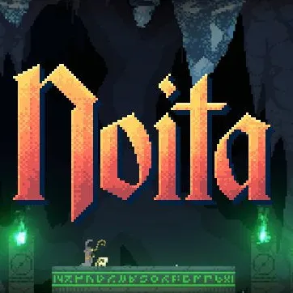
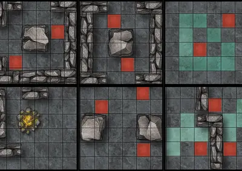
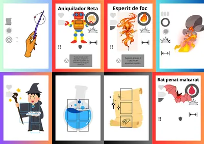

Hi ha idees que arriben després de mesos de reflexió. Altres apareixen durant una tarda avorrida.
I després hi ha les que neixen quan et quedes sense electricitat.
Com va néixer la Quinta Essència durant una apagada
Quan tot es va apagar
El 28 d'abril de 2025 em vaig trobar exactament en aquesta situació.
L'apagada va deixar el meu ordinador convertit en un objecte decoratiu molt car. Sense internet, sense TV, sense cap de les distraccions habituals.
Rara vegada el meu cap deixava de funcionar, i després d'unes jornades de poca fluïdesa creativa, en un moment on tot es va apagar, jo vaig veure la llum.
La inspiració
Feia temps que estava al·lucinat amb un videojoc anomenat Noita. Si no el coneixeu, és un joc d'alquímia, màgia i caos absolut on els líquids reaccionen entre ells de maneres sovint espectaculars i gairebé sempre mortals.
Sempre m'havia fascinat la sensació de descobrir una nova combinació per accident i veure com el món canviava davant dels meus ulls.

I aleshores em va venir una pregunta absurda:
"I si intentés convertir aquesta sensació en un joc de taula?"
Vaig agafar una llibreta i vaig començar a escriure.
Els primers esbossos
Al principi només hi havia una idea molt simple: els jugadors serien aprenents d'alquimista explorant un món ple de criatures estranyes, llacs de substàncies impossibles i receptes oblidades.
En lloc de recollir espases o armadures, recollirien líquids.
Cada substància tindria propietats diferents i podria combinar-se amb les altres per provocar efectes inesperats.
El naixement d'una història
A poc a poc va començar a aparèixer una història.
Vaig imaginar una mestra alquimista desapareguda. Llavors vaig pensar en com podria fer que el joc passés dins de l'univers d'El Árbol de las Flores Negras.
Va començar a prendre forma:
- Un món condemnat.
- Un drac ancestral que escapa i s'amaga sota les muntanyes de Kelenzal.
- Una substància llegendària coneguda com la Quinta Essència, la versió alquímica de la "Llum de la Natura" de la meva trilogia.
Al cap d'un temps, vaig escriure la carta que la Mestra Elyria deixava als seus deixebles i vaig sentir, per primera vegada, que aquell projecte era alguna cosa més que un experiment.
Potser estava dissenyant un joc, però també estava descobrint el món que no vaig saber explicar en les meves novel·les.
No estava pas malament.
La primera versió del joc
La primera versió del joc trobo que era molt divertida però, alhora, feia que les partides fossin eternes.
Els alquimistes començaven en una cantonada d'un mapa pel qual haurien d'anar avançant i explorant.
A mesura que descobrien noves zones, apareixien:
- Llacs amb líquids aleatoris.
- Enemics.
- Objectes.

Els alquimistes podien omplir les seves varetes amb líquids, que actuaven com una espècie d'energia màgica per fer servir encanteris. Els líquids també podien tacar i afectar als jugadors: ferir-los, fer-los anar més lents, fer-los més dèbils als atacs enemics...
Amb els encanteris es podia atacar els enemics que anaven apareixent durant l'aventura, i el dany que produïen estava indicat a les cartes d'encanteri.
Els enemics també jugaven. Podien moure's i atacar els alquimistes. Quan eren derrotats, cada tipus d'enemic produïa un efecte diferent:
- Deixar un toll de líquid.
- Explotar.
- Crear petits enemics nous.
- Altres efectes especials.
Era francament interessant veure com les partides evolucionaven i s'anaven complicant. Es notava la tensió en l'ambient.
L'objectiu era trobar varies fórmules amagades pel mapa per aconseguir crear les essències, i després combinar-les per fer la Quinta Essència. Aquesta seguia sent la idea principal del joc. A més, el mapa anava desapareixen, creant una pressió extra per a trobar-ho!
Els alquimistes també havien de trobar l'essència del portal dimensional, que els portava d'un nivell al següent.
Un projecte al calaix
Després de varies proves i modificacions per a simplificar-ho vaig deixar aquella idea enrere.
No l'abandonaré del tot, perquè crec que encara té possibilitats. Tanmateix, de moment es quedarà al calaix.

Què vindrà després?
En la propera entrada explicaré el sistema del joc que vaig triar per a simplificar les mecàniques però mantenint l'essència original i quines són les seves principals característiques.
Fins aviat!